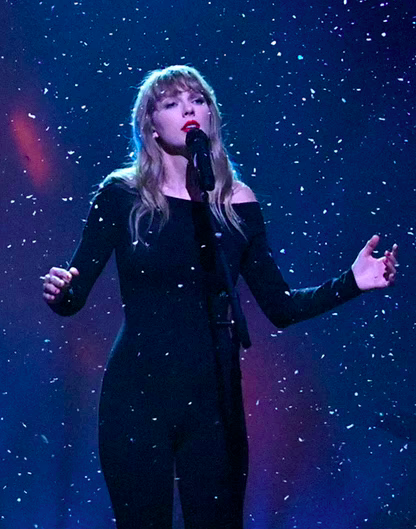

What item did Taylor Swift's ex not return to her in the song?
- A. A cat
- B. A CD
- C. A scarf
- D. A Starbucks gift card
What event did Taylor Swift's ex in the song not show up to?
- A. Their wedding
- B. Valentine's Day dinner
- C. Her Talk Like a Pirate Day celebration
- D. Her 21st birthday party

Which two actors did Taylor Swift cast as the two lovers in the short film for the song?
- A. Joe Jonas and Sophie Turner
- B. Dylan O'Brien and Sadie Sink
- C. Ryan Reynolds and Blake Lively
- D. Cole Sprouse and Olivia Rodrigo
What does Taylor metaphorically compare herself to in the bridge?
- A. A crumpled up piece of paper
- B. A barren tree
- C. A clown
- D. An old worn out pair of shoes

What paradox surrounding Taylor's ex does the song point out?
- A. He told her he hates pumpkin spice lattes but buys one daily.
- B. He was mad that she a wrote song about him after their breakup but he wrote one about her.
- C. He claims he is a feminist but thinks women belong in the kitchen.
- D. He said that Taylor was too young but continues to date younger women after they broke up.
Why did Taylor Swift release a ten-minute version of All Too Well?
- A. She wanted to make her ex feel even worse nine years later.
- B. Her fans asked her to continuously when they heard the original was ten minuntes long.
- C. She wanted to make more money to buy her cats a castle.
- D. She wanted to show music critics that she could write a successful ten-minute song.